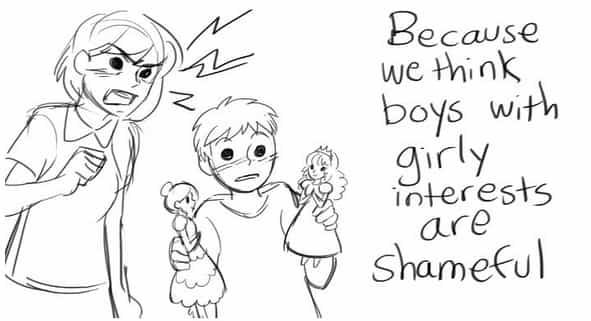

Steve is a thirtysomething British man who is both incredibly brilliant and uncannily dapper. He lives in the beautiful English countryside with his two boys, his wife, and his cat.


“Why oh why didn’t I take the BLUE pill?” – Cypher (The Matrix, 1999)
Mangina [man-jahy-nuh]
noun
1. A man totally controlled by a woman
2. A weak willed man
3. The Good Men Project
Most blue pill guys are like that because they just don’t know any better. Raised in a culture that lies to them at every turn, from sissified schools to sensitised workplaces to the Electronic Feminist that is television, beta has become the default setting for modern men.
It takes strength to admit to yourself that you’ve been swindled. Often this realisation only comes after a painful experience, such as divorce. The manosphere is a valuable resource for teaching life lessons to men, hopefully before they have to learn the hard way.
But what if I told you there’s an anti-manosphere? I don’t mean the feminists, bless their confused little hearts and permanently twisted panties. I mean a corner of the web where men who should know better actively push blue pill bromides like they’re the Walter White of pussification.
Welcome to the wacky world of The Good Men Project, or as I call it, The Manginasphere.
Remember those old Star Trek episodes set in an evil alternate universe where everybody was an evil version of the regular Star Trek characters? Think of the manginasphere as being the Evil Goateed Spock version of the manosphere.
If Evil Goateed Spock was a pussy
The first clue that you’re not in for a fun time on the manginasphere appears on their About page, which grandly informs the hapless reader that they intend to “break down the oppressive gender binary.” Uh huh. Because “gender binary,” otherwise known as “biology” is “oppressive” to obsequious, orchidectomised “good men.”
The next clue is that it’s a “men’s website” run by women. Their CEO and Publisher, two of their Executive Editors and three of their Senior Editors are literally as dickless as their male colleagues are figuratively so. What kind of a man needs women to tell him how to be a man? A mangina does.
The rest of their site is crammed full of every weird and miserable social justice warrior talking point you could possibly imagine, from crying about “white privilege,” to crying about how videogames are too masculine, to crying about “shaming” and gun control and men who don’t like fatties and yadda yadda yadda. You get the point. There’s a lot of crying in the manginasphere. Often real, actual, crying, such as in:
When they’re not crying, they’re offering hilariously bad advice. Here’s what manginas think you should do to get laid:
Be Non-Judgmental because you shouldn’t worry if she walks like John Wayne due to riding the cock carousel for so long, lower your standards and you might get to put your penis where any number of men have been before!
Fight Back Against Rape Culture because in manginaland, #rapeculture is a real thing! And women get the tingles when white knights tell them how much they disapprove of rape. You know—as opposed to all those other men who love rape.
Being a feminist ally will help you get laid because in manginaland, grovelling to feminists for long enough that you eventually get some sweet pity sex is totally worth it, you guys! Why, after only a few years of apologising for having a penis you could be banging some ravishing radfem like this plus-sized princess:
Until she accuses you of rape and/or eats you.
If you think that’s guaranteed to dry up a woman’s vagina faster than a hairdryer pointed at the crotch, wait till you hear their advice about what men should say to their girlfriends:
“I respect you,” “I just love kissing you,” “I accept your drama,” and “I love that you tell me off sometimes”—these are just some of the things Good Men will be saying before they come home early one day to find their girlfriend being ridden like Seabiscuit by a more masculine man.
And here’s Tom Matlack, founder of The Good Men Project and honorary Prince of the Manginas, complaining about men who admire attractive women, like the lovely Christina Hendricks or the winsome Katy Perry:
I click on bustier-clad Katy Perry and skip down to the interview, trying to ignore Ms. Perry in full black lingerie, complete with garter belt. After all, this is about man at his best; there must be something serious here that we all love so much.
Ah, here it is: “I always wanted to suspend from the ceiling in a twirling banana,” Katy tells Esquire. I’m done.
I close the browser window and stare out the window.
“2/10, would not bang” – The Good Men Project
So what sort of women does His Manginaness think we should be interested in?
Gwyneth Paltrow – That derpy-looking airhead who’s always going on about organic enemas or something.
Patti Stanger – The orange-skinned oompa loompa / harpie from Millionaire Matchmaker.
Steffi Graf – The Barry Manilow of tennis.
Lady Gaga – Yes. Lady. Fucking. Gaga.
Michelle Obama – Seriously.
Portia de Rossi – A lesbian.
Let that be a lesson to you, boys. This is what happens when you double down on the sweet, sickly blue pill; you end up a pathetic husk of a man, going full social justice retard on the internet and fantasizing about Michelle Obama and her massive chin.
Should we pity the manginas, then? Not even for a split second. It’s bad enough that these “men” renounced their own masculinity and embraced male feminist manboobitude, but what really inspires me to hoist the black flag and set about them is the damage they are doing to their sons.
Here’s a telling snippet from a godawful piece of poetry they published recently, which boasts about raising a fourteen year old boy to become a censorious little social justice snitch:
here, between childhood and adulthood, let me tell you again
what being a man is — it is
[…]
reporting the players who say “faggot”
during League of Legends
Here’s a celebration of raising boys to be feminised girly-men:
And note this unintentionally hilarious cartoon, complaining about the “sexism” that makes normal people try to raise their sons to be masculine:

The dragon punch: an invaluable tool for the modern parent
But what happens when you follow the Good Men’s advice and raise your son to believe that girly interests are acceptable? This happens:
Note the role of the parents in this: they send him to ballet dancing lessons. You’ll never guess what happened next:
Two of Morgan’s favorite male dancers, Derek and Justin, performed a duet that apparently changed Morgan’s life. It was a love story set in the 1940′s between two men. One of the most intimate, elegant and authentic love stories I’ve seen through dance. Justin and Derek were stellar. Halfway through the piece Morgan laid his head on my shoulder, and I cried. I felt a deep sense of gratitude to the dancers. During the drive home I asked him what he thought of their performance. Still awestruck he replied, “It was powerful and amazing!”
And, just like that, he’s gay.
Instead of reassuring the boy that he’s only nine years old and has a lot of growing up to do before he needs to worry about sexuality, instead of taking him out of ballet dancing lessons and away from the adult gay men who are giving him funny ideas, instead of giving their child a healthy masculine environment or a chance to work out his confused feelings in private; these “progressives”—these “Good Men”—decided to agree with a small child that he is “gay” and tell fucking everyone. What chance does the boy stand now? Even if he later decides he isn’t gay, this will haunt him throughout high school and possibly the rest of his life.
That, gentlemen, is why manginas deserve to be ridiculed and shamed at every opportunity. No quarter, no mercy.
Read More: 7 Traits of the Male Feminist
{kind=link}
{kind=link}
{kind=link}
{kind=link}
{kind=link}
{kind=link}